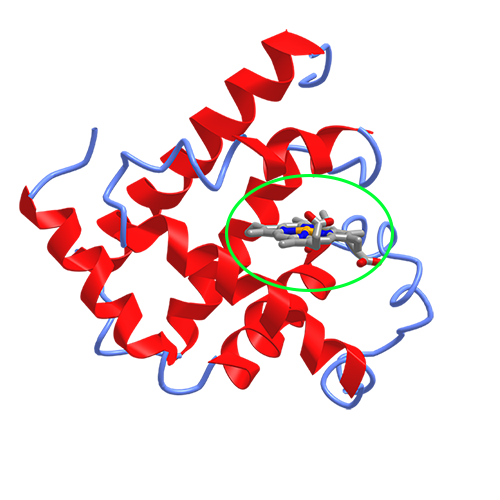

Analyzing MMCIF Files using Biopython#
Overview
Questions:
What is the Biopython library and what is it used for?
How can I use Biopython to analyze a protein structure (MMCIF) file?
Objectives:
Use Biopython to read information from an MMCIF
Use Biopython to measure atom neighbors and analyze protein-ligand interactions.
The Biopython library is a powerful and versatile collection of tools specifically designed to assist biochemists and biologists with computational work. Biopython simplifies tasks such as working with DNA and protein sequences, interacting with online databases like GenBank and UniProt, and reading molecular format files like mmCIF and PDB.
In this notebook, we will use Biopython to parse information from an MMCIF file.
Reading MMCIF Files#
The mmCIF (also called PDBx/mmCIF) file format defines the three dimensional structure of a protein and provides information
about the molecule, any ligands, host organism, and experimental method and conditions under which the data was obtained.
The mmCIF file has a specific format
that consists of data entries with certain keywords beginning with _ followed by their values.
The following is a text excerpt from the PDB 101 page about the mmCIF file format:
All data items are identified by name, begin with the underscore character and are composed of a category name and an attribute name. The category name is separated from the attribute name by a period:
_citation.year
This combination of category and attribute may be termed an mmCIF token.
Data categories are presented in two styles: key-value and tabular.
In the key-value style, the mmCIF token is followed directly by a corresponding value. The following example shows the unit cell parameters from entry 4hhb:
_cell.entry_id 4HHB
_cell.length_a 63.150
_cell.length_b 83.590
_cell.length_c 53.800
_cell.angle_alpha 90.00
_cell.angle_beta 99.34
_cell.angle_gamma 90.00
_cell.Z_PDB 4
BioPython has a function called MMCIF2Dict that can read this information into a Python Dictionary.
We can then query the dictionary to pull out data we are interested in.
# First import MMCIF2Dict function
from Bio.PDB.MMCIF2Dict import MMCIF2Dict
# read in the CIF file.
pdb_info = MMCIF2Dict("data/PDB_files/1mbn.cif")
The variable pdb_info is now a Python dictionary containing data from the CIF file.
We can pull out the cell information using dictionary syntax:
pdb_info["_cell.length_a"]
['64.500']
The mmCIF file contains a lot of data. You can see all of the possible dictionary keys by doing
pdb_info.keys()
Note that there are a large number of possible keys for an MMCIF file. Each MMCIF file contains a varying number of these keywords.
We can use some looping in Python to print some of the data of interest.
In the following cell, we use a for loop to go over all of the keys and print the value if the key contains the word _cell.
for key, value in pdb_info.items():
if "_cell." in key:
print(key, value)
_cell.entry_id ['1MBN']
_cell.length_a ['64.500']
_cell.length_b ['30.900']
_cell.length_c ['34.700']
_cell.angle_alpha ['90.00']
_cell.angle_beta ['106.00']
_cell.angle_gamma ['90.00']
_cell.Z_PDB ['2']
_cell.pdbx_unique_axis ['?']
There are a lot of keywords. You can browse then on this webpage from the World Wide PDB.
In particular, the _entity category contains interesting information:
"Data items in the ENTITY category record details (such as
chemical composition, name and source) about the molecular
entities that are present in the crystallographic structure.
Items in the various ENTITY subcategories provide a full
chemical description of these molecular entities.
Entities are of three types: polymer, non-polymer and water.
Note that the water category includes only water; ordered
solvent such as sulfate ion or acetone would be described as
individual non-polymer entities."
We can add printing information about the entity to the for loop.
for key, value in pdb_info.items():
if "_entity." in key:
print(key, value)
if "_cell." in key:
print(key, value)
_cell.entry_id ['1MBN']
_cell.length_a ['64.500']
_cell.length_b ['30.900']
_cell.length_c ['34.700']
_cell.angle_alpha ['90.00']
_cell.angle_beta ['106.00']
_cell.angle_gamma ['90.00']
_cell.Z_PDB ['2']
_cell.pdbx_unique_axis ['?']
_entity.id ['1', '2', '3']
_entity.type ['polymer', 'non-polymer', 'non-polymer']
_entity.src_method ['man', 'syn', 'syn']
_entity.pdbx_description ['MYOGLOBIN', 'HYDROXIDE ION', 'PROTOPORPHYRIN IX CONTAINING FE']
_entity.formula_weight ['17234.951', '17.007', '616.487']
_entity.pdbx_number_of_molecules ['1', '1', '1']
_entity.pdbx_ec ['?', '?', '?']
_entity.pdbx_mutation ['?', '?', '?']
_entity.pdbx_fragment ['?', '?', '?']
_entity.details ['?', '?', '?']
We see a few interesting entries in the _entity section.
The output tells us that there are three entities in the PDB.
These are myoglobin, a hydroxide ion, and a heme group (protoporphyrin IX containing Fe).
We will filter our for loop to not print values where ? is an entry to make this more clear by adding a conditonal statement before looking for keywords.
for key, value in pdb_info.items():
if "?" not in value:
if "_entity." in key:
print(key, value)
if "_cell." in key:
print(key, value)
_cell.entry_id ['1MBN']
_cell.length_a ['64.500']
_cell.length_b ['30.900']
_cell.length_c ['34.700']
_cell.angle_alpha ['90.00']
_cell.angle_beta ['106.00']
_cell.angle_gamma ['90.00']
_cell.Z_PDB ['2']
_entity.id ['1', '2', '3']
_entity.type ['polymer', 'non-polymer', 'non-polymer']
_entity.src_method ['man', 'syn', 'syn']
_entity.pdbx_description ['MYOGLOBIN', 'HYDROXIDE ION', 'PROTOPORPHYRIN IX CONTAINING FE']
_entity.formula_weight ['17234.951', '17.007', '616.487']
_entity.pdbx_number_of_molecules ['1', '1', '1']
Some things we might be interested in are the name of the organism the sample originated from and the sequence of the protein.
The relevant keywords for this will be _entity_src_gen.gene_src_common_name to get the common name of the organism,
_entity_src_gen.pdbx_gene_src_scientific_name for the scientific name of the organism,
and _entity_poly.pdbx_seq_one_letter_code for the sequence.
common_name_1mbn = pdb_info["_entity_src_gen.gene_src_common_name"]
print(common_name_1mbn)
['sperm whale']
scientific_name_1mbn = pdb_info["_entity_src_gen.pdbx_gene_src_scientific_name"]
print(scientific_name_1mbn)
['Physeter catodon']
sequence_1mbn = pdb_info["_entity_poly.pdbx_seq_one_letter_code"]
print(sequence_1mbn)
['VLSEGEWQLVLHVWAKVEADVAGHGQDILIRLFKSHPETLEKFDRFKHLKTEAEMKASEDLKKHGVTVLTALGAILKKKG\nHHEAELKPLAQSHATKHKIPIKYLEFISEAIIHVLHSRHPGDFGADAQGAMNKALELFRKDIAAKYKELGYQG']
Measuring 3D Properties - Ligand Neighbors#
In our analysis above, we see that the myoglobin structure contains an entity called “PROTOPORPHYRIN IX CONTAINING FE”.
One useful thing about having the crystal structure of the protein is that we can analyze the coordinates to see how different parts of the molecule interact. In myoglobin, the iron atom (Fe) in the protoporphyrin reversibly binds the oxygen \(O_2\) molecule to carry oxygen to muscles. We can use BioPython to analyze the binding of this heme group to the protein.
Later in the workshop, we will learn how we can use a Python library to visualize the protein structure. For now, you can see this image showing myoglobin and the heme group (circled).
{kind=link}
We will want to use Biopython to measure the neighbors of the iron atom in order to measure which residues the
heme group is bound to.
To perform this analysis, we will have to load the protein into a different data type called a Biopython structure.
This time, we will import MMCIFParser instead of MMCIF2Dict.
This will allow us to do measurements with the coordinates.
from Bio.PDB.MMCIFParser import MMCIFParser
# Create an MMCIFParser object
parser = MMCIFParser(QUIET=True)
# Parse the mmCIF file
structure = parser.get_structure("myoglobin", "data/PDB_files/1mbn.cif")
The structure variable is a Biopython structure.
The Structure object represents the molecules in the MMCIF file and is hierarchical. It follows the so-called SMCRA (Structure/Model/Chain/Residue/Atom) architecture :
A structure consists of models
A model consists of chains
A chain consists of residues
A residue consists of atoms
This is the way many structural biologists/bioinformaticians think about structure, and provides a simple but efficient way to deal with structure.
For our analysis, we want to find the neighbors of the iron atom.
To do this analysis, we will first need to find our iron atom.
We use the structure.get_atoms() function to get all of the atoms in the MMCIF.
The variable atoms after this step is a special data type called a generator.
A generator will load elements of a collection one a time using a loop.
This means only one atom would be loaded into memory if we looped through the atoms.
Biopython uses a generator when returning atoms because sometimes proteins can be so large that you don’t want to load them all into your computer memory at once.
There is one drawback to generators, however, and that is that you can only use them once (if you wanted to work with atoms again, you would have to do structure.get_atoms() again.
Because our protein is small and we expect to need the list of atoms more than one time, we will convert the atoms generator to a list using list(atoms).
However, if you are ever working with a larger structure, it might be better to use a generator.
atoms = structure.get_atoms()
type(atoms)
generator
atom_list = list(atoms)
# Loop through the atoms.
for atom in atom_list:
# Save information about the iron atom.
if atom.element == "FE":
iron_atom = atom
iron_coord = atom.get_coord()
print(iron_atom, iron_coord)
<Atom FE> [14.8 28.1 4.8]
We will now use Biopython to do a neighbor search.
A neighbor search is done in two steps.
First, we create a neighbor search variable using NeighborSearch(atoms).
Then, we do the neighbor search by inputting the coordinates we are looking for neighbors to,
and a cut-off distance for the neighbors.
Any atom that is within the specified cut-off distance is considered to be a neighbor.
from Bio.PDB import NeighborSearch
# Get a list of atoms
atoms = structure.get_atoms()
# Define the maximum distance for a neighbor.
cutoff_distance = 4
# Create a neighbor search.
neighbor_search = NeighborSearch(atom_list)
neighbors = neighbor_search.search(iron_atom.get_coord(), cutoff_distance)
print("The iron atom has", len(neighbors), "neighbor atoms.")
The iron atom has 21 neighbor atoms.
We can use a for loop to loop through the neighbor atoms that the search function found.
We can get the residue of the atom by using atom.get_parent().
for neighbor in neighbors:
residue = neighbor.get_parent()
print(residue.get_resname(), residue.get_id())
HIS (' ', 93, ' ')
HIS (' ', 93, ' ')
HIS (' ', 93, ' ')
HEM ('H_HEM', 155, ' ')
HEM ('H_HEM', 155, ' ')
HEM ('H_HEM', 155, ' ')
HEM ('H_HEM', 155, ' ')
HEM ('H_HEM', 155, ' ')
HEM ('H_HEM', 155, ' ')
HEM ('H_HEM', 155, ' ')
HEM ('H_HEM', 155, ' ')
HEM ('H_HEM', 155, ' ')
HEM ('H_HEM', 155, ' ')
HEM ('H_HEM', 155, ' ')
HEM ('H_HEM', 155, ' ')
HEM ('H_HEM', 155, ' ')
HEM ('H_HEM', 155, ' ')
HEM ('H_HEM', 155, ' ')
HEM ('H_HEM', 155, ' ')
HEM ('H_HEM', 155, ' ')
OH ('H_OH', 154, ' ')
THe lines that say “HEM” are for atoms that belong to the heme ligand. We are interested in how the ligand binds to the protein, so we’ll modify the for loop to only print neighbors if they are not part of the same residue as the iron.
iron_residue = iron_atom.get_parent()
for neighbor in neighbors:
residue = neighbor.get_parent()
if residue != iron_residue:
print(neighbor.element, residue.get_resname(), residue.get_id()[1])
C HIS 93
N HIS 93
C HIS 93
O OH 154
Our analysis shows us that HIS 93 is a neighbor to the iron in the heme group. This histidine is called the “distal histidine” and is known to bind to the iron in the heme group. You can read more about myoglobin’s structure here.
Try increasing the distance to 5. What do you find?
Challenge - Repeat analysis for a Zinc Finger#
Zinc fingers are small protein motifs that are characterized by the coordination of one or more zinc ions to stabilize their structure, enabling them to interact with other molecules such as DNA, RNA, or proteins. These motifs are commonly found in transcription factors, where they play a crucial role in the recognition and binding of specific DNA sequences, thereby regulating gene expression.
For this challenge, you will analyze the structure 1a1t.
This structure is the HIV-1 nucleocapsid protein, which contains two zinc fingers that grip the viral RNA during budding of the virus.
{kind=link}
Hint 1 - The structure 1a1t is determined by NMR and contains 25 structure models. When you load the structure using the MMCIF parser, you will get a list of 25 structures. You can analyze only one of them by using list indexing:
# Create an MMCIFParser object
parser = MMCIFParser(QUIET=True)
# Parse the mmCIF file
structures = parser.get_structure("1a1t", "data/PDB_files/1a1t.cif") # This will be a list with 25 elements!
# Get the first structure
structure = structures[0]
Hint 2 - The structure also contains more than one Zinc atom, so if you would like to analyze both that are present in the structure, you will have to use your Python knowledge to slightly modify your code.